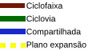

Secretaria Municipal da Fazenda
Cadastro Técnico Municipal
Mais informações: PORTAL GEOITAJAÍ
DOWNLOADS
Legenda:
Clique em uma zona para visualizar os parâmetros.
Estudo conceitual.

Secretaria Municipal de Desenvolvimento Urbano e Habitação
Contato : (47) 32460452
Acervo parcial de pranchas digitalizadas.